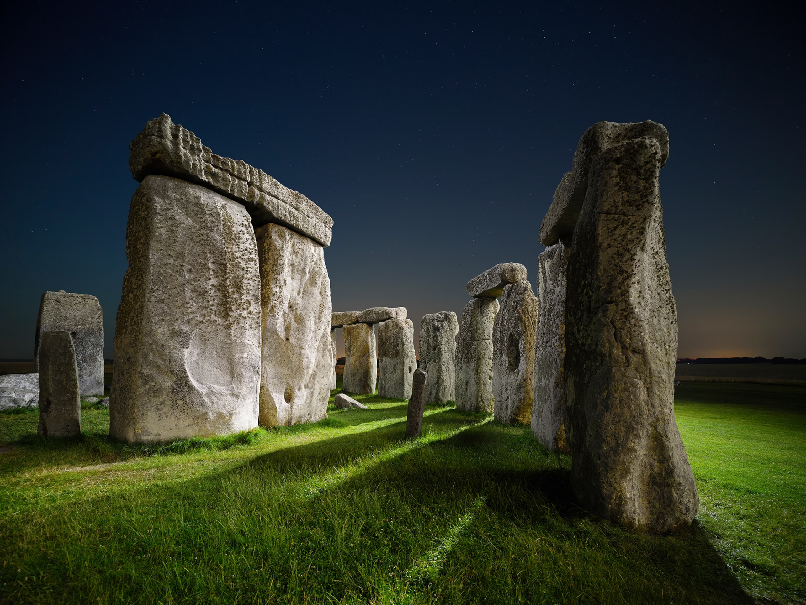
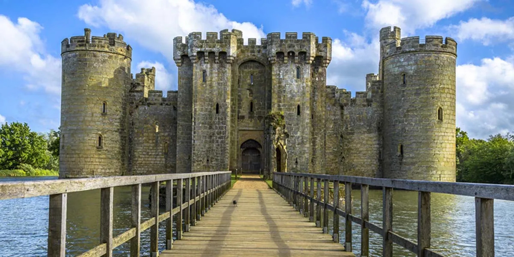
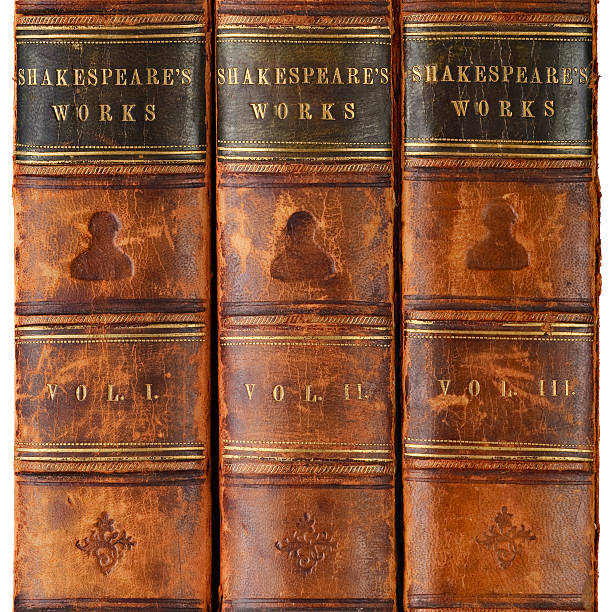
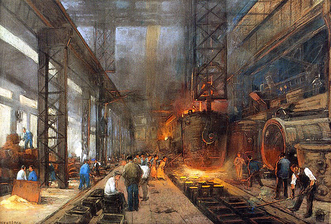

THE CHRONICLES
Every inch of British soil echoes with stories of wars, revolutions, and golden eras. Step back into the centuries where legends were born and global civilizations were shaped.
Long before transforming into a modern megacity, England marked the furthest frontier of the Roman Empire. The ancient fortress walls of Londinium and the prehistoric mysteries of Stonehenge stand as silent witnesses to the foundational roots of Britain.

Ignited by the Norman Conquest under William the Conqueror, this medieval era birthed towering stone fortresses and legendary knightly chivalry. It also saw the signing of the Magna Carta, a monumental charter that fundamentally reshaped human rights and global law.

Under the powerful reign of the House of Tudor and Queen Elizabeth I, England experienced a massive cultural explosion. Shakespeare’s Globe Theatre began staging timeless masterpieces, while daring English fleets embarked on pioneering maritime explorations across global oceans.

Steam engines paired with coal gave rise to the Industrial Revolution. Red-brick factories emerged rapidly, transforming quiet agrarian landscapes into technological hubs and firmly cementing England's position as the core of the largest global empire of its time.

"History is not a burden on the memory but an illumination of the soul."